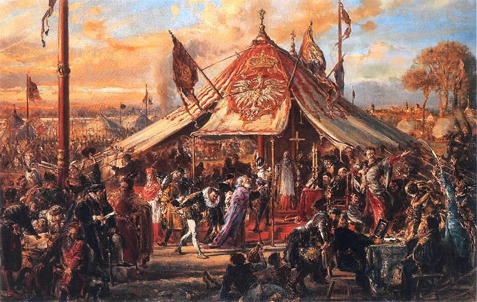
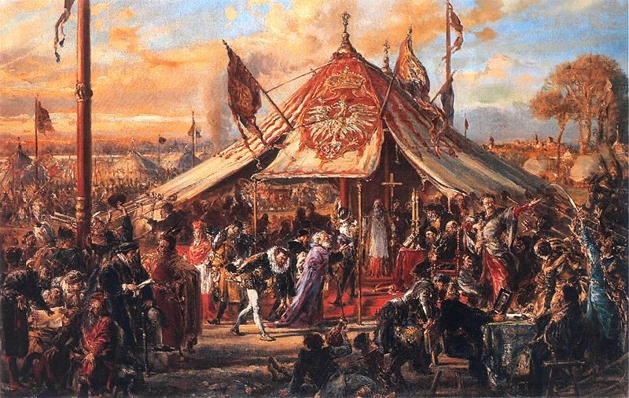
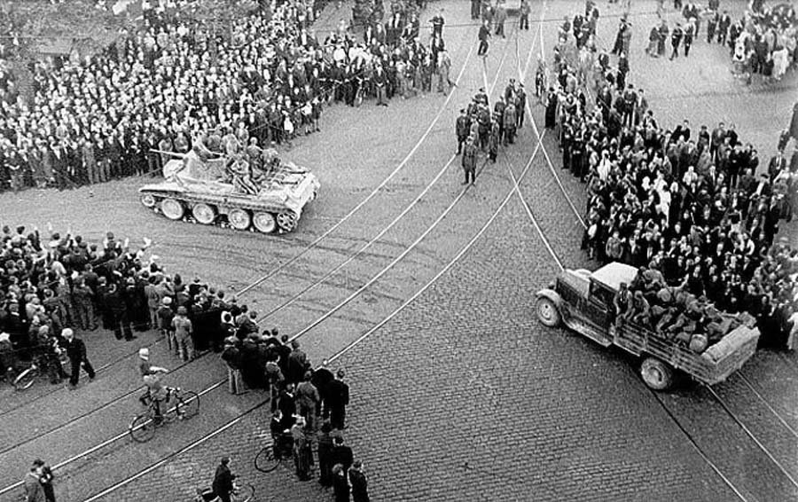

History
Around 3000 BC, the proto-Baltic ancestors of the Latvian people settled on the eastern coast of the Baltic Sea. The Balts established trade routes to Rome and Byzantium, trading local amber for precious metals. By 900 AD, four distinct Baltic tribes inhabited Latvia: Curonians, Latgalians, Selonians, Semigallians, as well as the Finnic tribe of Livonians (lībieši) speaking a Finnic language. ReadMore
Medieval period
Although the local people had contact with the outside world for centuries, they became more fully integrated into the European socio-political system in the 12th century. The first missionaries, sent by the Pope, sailed up the Daugava River in the late 12th century, seeking converts. The local people, however, did not convert to Christianity as readily as the Church had hoped.
German crusaders were sent, or more likely decided to go on their own accord as they were known to do. Saint Meinhard of Segeberg arrived in Ikšķile, in 1184, traveling with merchants to Livonia, on a Catholic mission to convert the population from their original pagan beliefs. Pope Celestine III had called for a crusade against pagans in Northern Europe in 1193. When peaceful means of conversion failed to produce results, Meinhard plotted to convert Livonians by force of arms.
Reformation period and Polish–Lithuanian rule
  After the Livonian War (1558–1583), Livonia (Latvia) fell under Polish and Lithuanian rule. The southern part of Estonia and the northern part of Latvia were ceded to the Grand Duchy of Lithuania and formed into the Duchy of Livonia (Ducatus Livoniae Ultradunensis). Gotthard Kettler, the last Master of the Order of Livonia, formed the Duchy of Courland and Semigallia. Though the duchy was a vassal state to Poland, it retained a considerable degree of autonomy and experienced a golden age in the 16th century.
 After the Livonian War (1558–1583), Livonia (Latvia) fell under Polish and Lithuanian rule. The southern part of Estonia and the northern part of Latvia were ceded to the Grand Duchy of Lithuania and formed into the Duchy of Livonia (Ducatus Livoniae Ultradunensis). Gotthard Kettler, the last Master of the Order of Livonia, formed the Duchy of Courland and Semigallia. Though the duchy was a vassal state to Poland, it retained a considerable degree of autonomy and experienced a golden age in the 16th century.
Latgalia, the easternmost region of Latvia, became a part of the Inflanty Voivodeship of the Polish-Lithuanian Commonwealth. In the 17th and early 18th centuries, the Polish–Lithuanian Commonwealth, Sweden, and Russia struggled for supremacy in the eastern Baltic. After the Polish–Swedish War, northern Livonia (including Vidzeme) came under Swedish rule. Riga became the capital of Swedish Livonia and the largest city in the entire Swedish Empire. Fighting continued sporadically between Sweden and Poland until the Truce of Altmark in 1629. In Latvia, the Swedish period is generally remembered as positive; serfdom was eased, a network of schools was established for the peasantry, and the power of the regional barons was diminished.
Latvia in the Russian Empire (1795–1917)
The capitulation of Estonia and Livonia in 1710 and the Treaty of Nystad, ending the Great Northern War in 1721, gave Vidzeme to Russia (it became part of the Riga Governorate). The Latgale region remained part of the Polish–Lithuanian Commonwealth as Inflanty Voivodeship until 1772, when it was incorporated into Russia. The Duchy of Courland and Semigallia became an autonomous Russian province (the Courland Governorate) in 1795, bringing all of what is now Latvia into the Russian Empire. All three Baltic provinces preserved local laws, German as the local official language and their own parliament, the Landtag.
During the Great Northern War (1700–1721), up to 40 percent of Latvians died from famine and plague. Half the residents of Riga were killed by plague in 1710–1711. The emancipation of the serfs took place in Courland in 1817 and in Vidzeme in 1819.
In practice, however, the emancipation was actually advantageous to the landowners and nobility, as it dispossessed peasants of their land without compensation, forcing them to return to work at the estates "of their own free will". During these two centuries Latvia experienced economic and construction boom – ports were expanded (Riga became the largest port in the Russian Empire), railways built; new factories, banks, and a University were established; many residential, public (theatres and museums), and school buildings were erected; new parks formed; and so on.
Declaration of independence
 World War I devastated the territory of what became the state of Latvia, and other western parts of the Russian Empire. Demands for self-determination were initially confined to autonomy, until a power vacuum was created by the Russian Revolution in 1917, followed by the Treaty of Brest-Litovsk between Russia and Germany in March 1918, then the Allied armistice with Germany on 11 November 1918. On 18 November 1918, in Riga, the People's Council of Latvia proclaimed the independence of the new country, with Kārlis Ulmanis becoming the head of the provisional government. The General representative of Germany August Winnig formally handed over political power to the Latvian Provisional Government on 26 November.
World War I devastated the territory of what became the state of Latvia, and other western parts of the Russian Empire. Demands for self-determination were initially confined to autonomy, until a power vacuum was created by the Russian Revolution in 1917, followed by the Treaty of Brest-Litovsk between Russia and Germany in March 1918, then the Allied armistice with Germany on 11 November 1918. On 18 November 1918, in Riga, the People's Council of Latvia proclaimed the independence of the new country, with Kārlis Ulmanis becoming the head of the provisional government. The General representative of Germany August Winnig formally handed over political power to the Latvian Provisional Government on 26 November.
Latvia in World War II
Early in the morning of 24 August 1939, the Soviet Union and Nazi Germany signed a 10-year non-aggression pact, called the Molotov–Ribbentrop Pact. The pact contained a secret protocol, revealed only after Germany's defeat in 1945, according to which the states of Northern and Eastern Europe were divided into German and Soviet "spheres of influence". In the north, Latvia, Finland and Estonia were assigned to the Soviet sphere. A week later, on 1 September 1939, Germany and on 17 September, the Soviet Union invaded Poland. After the conclusion of the Molotov-Ribbentrop Pact, most of the Baltic Germans left Latvia by agreement between Ulmanis' government and Nazi Germany under the Heim ins Reich programme. In total 50,000 Baltic Germans left by the deadline of December 1939, with 1,600 remaining to conclude business and 13,000 choosing to remain in Latvia.
Most of those who remained left for Germany in summer 1940, when a second resettlement scheme was agreed. The racially approved being resettled mainly in Poland, being given land and businesses in exchange for the money they had received from the sale of their previous assets. On 5 October 1939, Latvia was forced to accept a "mutual assistance" pact with the Soviet Union, granting the Soviets the right to station between 25,000 and 30,000 troops on Latvian territory. State administrators were liquidated and replaced by Soviet cadres. Elections were held with single pro-Soviet candidates listed for many positions. The resulting people's assembly immediately requested admission into the USSR, which the Soviet Union granted. Latvia, then a puppet government, was headed by Augusts Kirhenšteins. The Soviet Union incorporated Latvia on 5 August 1940, as The Latvian Soviet Socialist Republic.
Soviet era (1940–1941, 1944–1991)
In 1944, when Soviet military advances reached Latvia, heavy fighting took place in Latvia between German and Soviet troops, which ended in another German defeat. In the course of the war, both occupying forces conscripted Latvians into their armies, in this way increasing the loss of the nation's "live resources". In 1944, part of the Latvian territory once more came under Soviet control. The Soviets immediately began to reinstate the Soviet system. After the German surrender, it became clear that Soviet forces were there to stay, and Latvian national partisans, soon joined by some who had collaborated with the Germans, began to fight against the new occupier.
Anywhere from 120,000 to as many as 300,000 Latvians took refuge from the Soviet army by fleeing to Germany and Sweden. Most sources count 200,000 to 250,000 refugees leaving Latvia, with perhaps as many as 80,000 to 100,000 of them recaptured by the Soviets or, during few months immediately after the end of war, returned by the West. The Soviets reoccupied the country in 1944–1945, and further deportations followed as the country was collectivised and Sovieticised. On 25 March 1949, 43,000 rural residents ("kulaks") and Latvian patriots ("nationalists") were deported to Siberia in a sweeping Operation Priboi in all three Baltic states, which was carefully planned and approved in Moscow already on 29 January 1949. This operation had the desired effect of reducing the anti Soviet partisan activity. Between 136,000 and 190,000 Latvians, depending on the sources, were imprisoned or deported to Soviet concentration camps (the Gulag) in the post war years, from 1945 to 1952. Some managed to escape arrest and joined the partisans.
Restoration of independence in 1991
In the second half of the 1980s, Soviet leader Mikhail Gorbachev started to introduce political and economic reforms in the Soviet Union that were called glasnost and perestroika. In the summer of 1987, the first large demonstrations were held in Riga at the Freedom Monument—a symbol of independence. In the summer of 1988, a national movement, coalescing in the Popular Front of Latvia, was opposed by the Interfront. The Latvian SSR, along with the other Baltic Republics was allowed greater autonomy, and in 1988, the old pre-war Flag of Latvia flew again, replacing the Soviet Latvian flag as the official flag in 1990.
In 1989, the Supreme Soviet of the USSR adopted a resolution on the Occupation of the Baltic states, in which it declared the occupation "not in accordance with law", and not the "will of the Soviet people". Pro-independence Popular Front of Latvia candidates gained a two-thirds majority in the Supreme Council in the March 1990 democratic elections. On 4 May 1990, the Supreme Council adopted the Declaration on the Restoration of Independence of the Republic of Latvia, and the Latvian SSR was renamed Republic of Latvia.